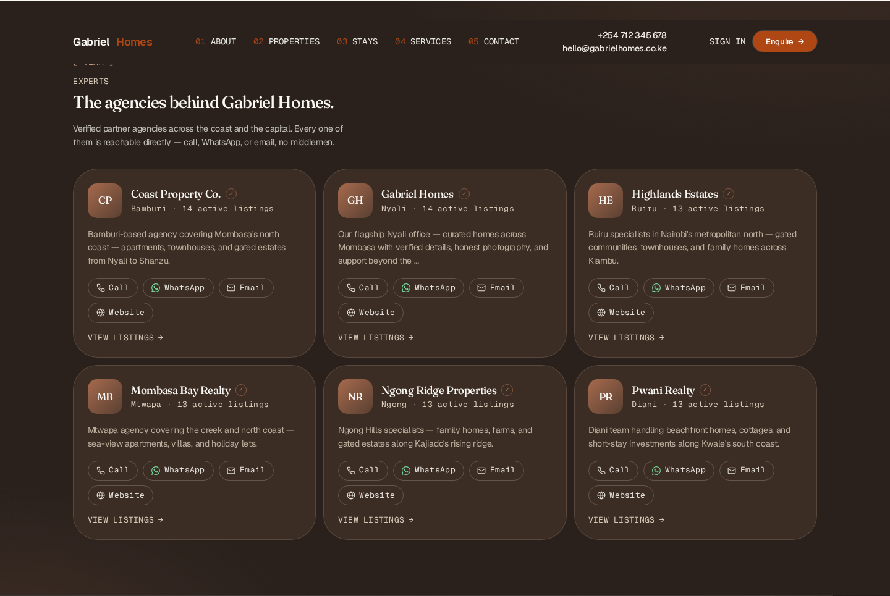
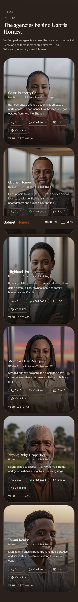

[ Gabriel Homes · delivery ]
Website Update — Agents-Only Accounts + Offline Repair
Your latest notes are done: visitors no longer get accounts (agents + superusers only), the navbar sign-in button is gone, and the updater now repairs Python without internet and runs the site from your local disk so pages never hang again.



recommended Full Update Zip (r5)
Everything in one download: the newest pages, the self-repairing updater, the site launcher, and all Windows install wheels. Extract it, then double-click UPDATE-WEBSITE.bat inside the extracted folder — it finds your real site, fixes the Python environment offline, and updates the database.
Download the update zip (r5)Self-Repairing Updater Only
Just the new UPDATE-WEBSITE.bat. Copy it into your site folder (replacing the old one) and double-click it there — it will use the update zip you already downloaded.
Download the updater[ how to apply the update — 4 steps ]
- Delete the old update zip from your Downloads folder, so the new one cannot be confused with it.
- Download the update zip (r5) above and extract it — right-click → Extract All...
- Open the extracted folder and double-click UPDATE-WEBSITE.bat. It finds your real site (even on the Z: drive), repairs Python offline if needed, applies the update and updates the database — every step prints its own result, and the DONE banner only appears when everything truly passed.
- Restart the website: close the black website window (or run
STOP-WEBSITE.bat), then double-click START-GABRIEL-HOMES.bat. The first start copies the site to your local disk (one time, up to a minute) and then opens your browser. From now on pages load fast.
/admin/ (admin@gabrielhomes.co.ke), add a User with Staff
and Agent ticked plus a password, then add an AgencyProfile linked
to that user. Agents sign in from the footer Agent sign in link.
What was actually wrong? (technical detail)
Three separate defects, all fixed in this delivery. (1) CMD's
cd /d \\server\share\... fails on UNC paths — the updater uses
pushd, tells an extracted update folder apart from the real
site by the presence of db.sqlite3, and resolves the true Downloads
folder from the registry. (2) A half-installed .venv (Django
missing) made every migrate/health-check crash with “No module named 'django'”
while the old script still printed DONE — the v5.1 updater now gates every step
on errorlevels and repairs the environment offline from the bundled
wheels/ folder (30 win_amd64 wheels, CPython 3.10–3.13).
(3) SQLite stalls indefinitely on network filesystems, so a site on
Z:\ hangs every request — the launcher now relocates the site to
%LOCALAPPDATA%\GabrielHomes on first start (detected via
fsutil with a locale-independent WMI DriveType
fallback), and the updater targets that same local copy.